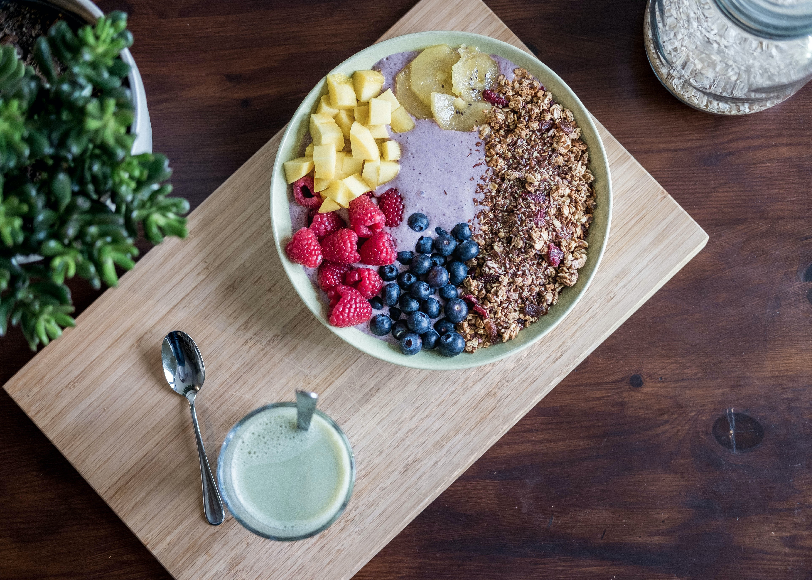

IMPORTANCE OF FITNESS

FITNESS
Exercising for 30 minutes at least 5 days a week makes you look and feel better while reducing your risks for many chronic conditions. Physical activity boosts your immune system and mental sharpness, and helps you avoid obesity, diabetes, cancer and heart problems.
FITNESS CAN BE MAINTAINED
1. Schedule your workout.
2. Sleep smarter.
3. Start a culture of health and fitness at work.
4. Get creative and multitask.

>
BMI CALC
Body mass index (BMI) is a measure of body fat based on height and weight that applies to adult men and women. View the BMI tables oruse the tool below to compute yours. measures. 1. Enter your weight and height using standard or metric 2.Select "Compute BMI" and your BMI will appear below.